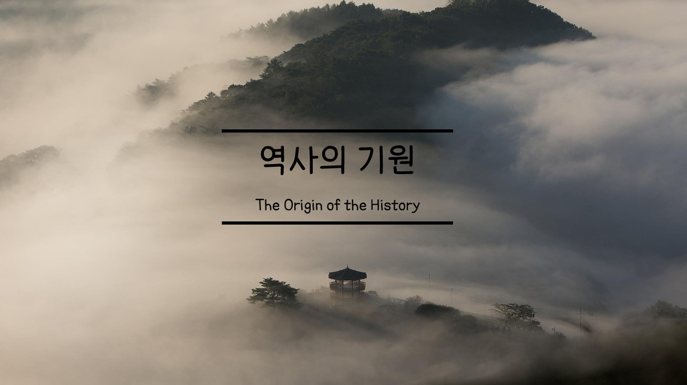
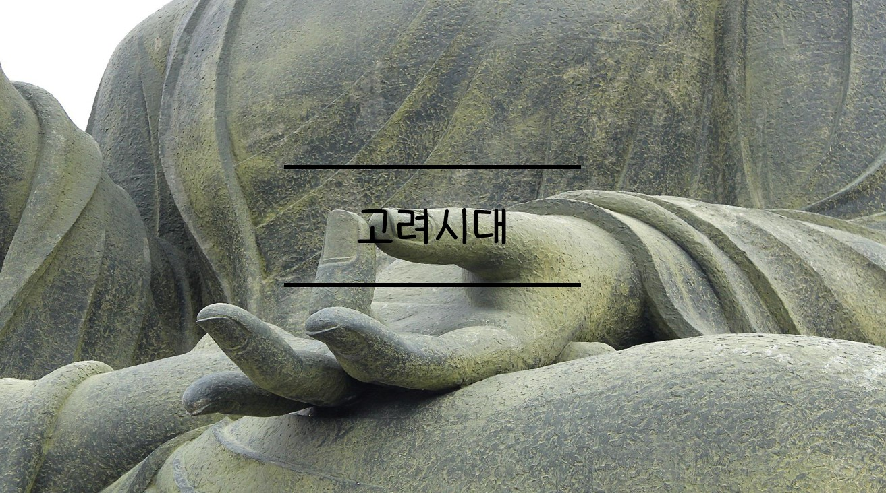

First
역사의 기원과 초기 사회
구석기 시대부터 초기 국가들의 형성 과정까지 알아봅시다.
#구석기 #신석기 #철기 #고조선 #초기국가
36 comments
by Mr.kim
Second
삼국시대
삼국시대에 일어난 사건과
삼국시대 각 나라들을 대표하는 왕의 업적, 유물들을 살펴봅시다.
#백제 #고구려 #신라 #통일신라
48 comments
by Mr.Kim

Third
고려시대
신라가 멸망한 과정과 고려사 500년동안 일어난 사건을 알아봅시다.
#고려 #원나라 #거란 #팔만대장경
24 comments
by Mr.kim
4th
조선 전기
영원할 줄 알았던 고려 500년의 멸망 과정과 조선의 시작을 배워봅시다.
#조선 #조선전기
72 comments
by Mr.kim
5th
조선 후기
조선 후기 일어난 정치 변화와 경제, 사회 변혁의 움직임에 대하여 배워봅시다.
#조선 #조선후기
84 comments
by Mr.kim
6th
개항기
흥선대원군의 집권으로 나라의 개항, 각국과 맺은 조약을 알아봅시다.
#흥선대원군 #개항 #최혜국 #임오군란
96 comments
by Mr.Kim
7th
일제강점기
일제의 식민지 통치와 무장 독립 전쟁으로 민족 문화를 수호한 운동에 대하여 알아봅시다.
#일제강점기 #아픈역사 #무단통치 #민족말살정치
146 comments
by Mr.Kim
8th
현대사회
광복과 통일을 위한 노력과 전반적 사회 변화를 알아봅시다.
#대통령 #정부 #광복 #통일 #이승만
153 comments
by Mr.Kim